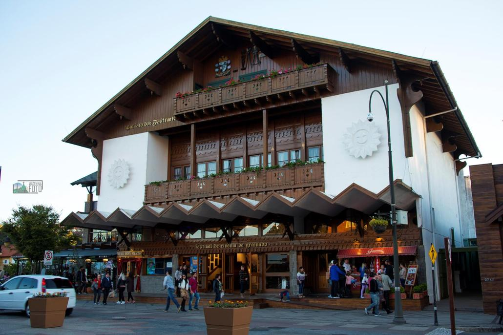
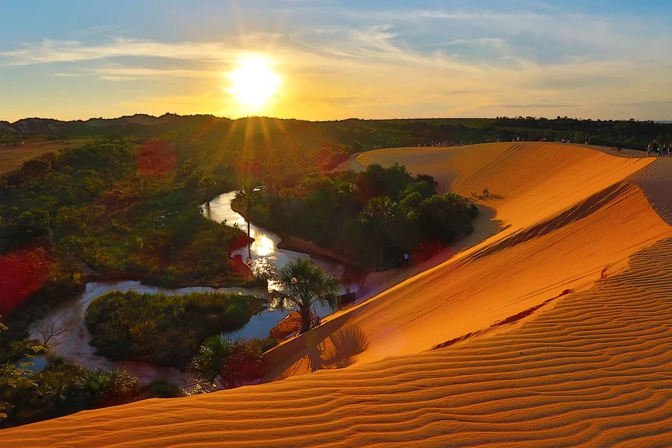
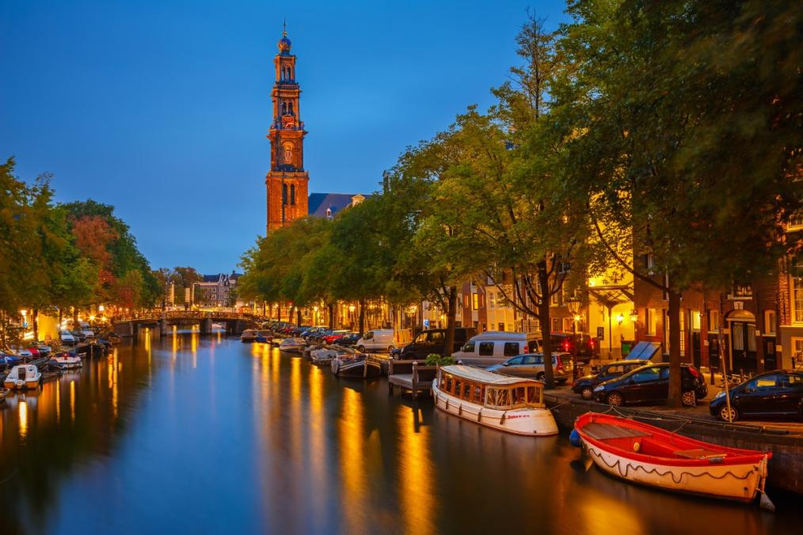

O arquipélago Fernando de Noronha é considerado o melhor ponto de mergulho do Brasil e reúne diversos cartões postais como o morro do Pico, o morro Dois Irmãos, o Forte de Nossa Senhora dos Remédios e outros.
Temos Pacotes com 7 dias a partir de 4 mil reas com Hotel e voo incluso.

Principal destino da Serra Gaúcha, Gramado apesar do charme que ganha com o friozinho do inverno, a cidade possui atrações para curtir o ano inteiro e festivais que ficaram famosos no Brasil inteiro, como o Natal Luz e o Festival de Cinema de Gramado.
Temos Pacotes a partir de 5 dias com o valor de R$1.800 reais incluind hotele voo.

Pequena e rústica, a vila de Jericoacoara é um dos destinos de praia mais badalados do Brasil. E com toda razão, o visual paradisíaco com praias, dunas, lagoas e mangues é simplesmente espetacular.
Pacotes com 8 diárias incluindo hotele voo por R$5.200 reais.

O Parque Estadual do Jalapão fica no estado do Tocantins, Região Norte do Brasil.É um destino para quem é aventureiro e gosta de adrenalina e tem ganhado fama nos últimos anos como um dos últimos locais pouco explorados no Brasil.
Pacotes a partir de 6 dias com Hotel e voo incluso por R$2.700 reais.

Conheça cidades medievais, montanhas nevadas, lagos e os melhores chocolates do mundo com suas passagens aéreas para a Suíça!.O país, conhecido pela qualidade de vida e pela infraestrutura urbana, é um dos destinos mais procurados da Europa.
Pacotes com 6 diárias por R$8.500 reais

A Islândia já virou cenário da série Game of Thrones e é uma opção de viagem para quem prefere locais com menor aglomeração de turistas, ou seja, é ideal para quem tem interesse em natureza, vulcões, e nos mistérios de destinos mais isolados e que rendem fotos sensacionais!. Pacotes com 5 diárias a partir de 10r

Eleita uma das sete maravilhas do mundo, Machu Picchu abriga templos, terraços e canais de água, construída no topo de uma montanha.
Cercada de enigmas e história, a cidade guarda informações importantes da cultura inca.
Pacotes com 7 diarias por 2.700 reais com o voo incluso.
